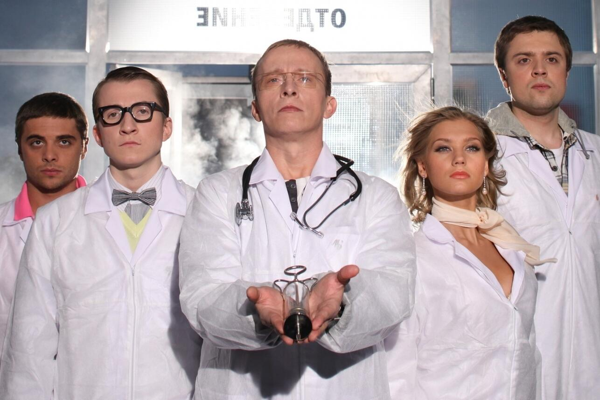

С 1667 года
Работаем ещё со времён Острова Сокровищ
2 легендарных доктора
Быков и Ливси — больше нам не надо
Попугай на приёме
Ваш пернатый друг — тоже пациент
Ром запрещён
Ливси лично проверит вашу флягу
Наши легенды
Городская больница №67 имени доктора Ливси и Ивана Охлобыстина — уникальное медицинское учреждение, где классическая терапия встречается с пиратской вольницей, а российская суровая школа — с британским хладнокровием.
Здесь работают всего два доктора, но каждый из них — легенда. Один вырезает сердце ложкой. Другой запрещает ром и читает лекции о вреде курения прямо посреди операции.
«Быстро эволюционируем до прямоходящих, и за мной!» — Доктор Андрей Быков, заведующий отделением
В нашей больнице вам не придётся ждать в очереди — Быков просто раскидает всех по фактам, а Ливси в это время проверит, нет ли у вас цинги. Спойлер: есть. Вы же пьёте ром.
Почему именно эти два доктора?
Доктор Быков — потомственный врач в третьем поколении, знаменит тем, что умеет орать на интернов так, что у них вырастают крылья. Доктор Ливси — выпускник Эдинбургского университета, корабельный врач с «Испаньолы», консультант по тропическим болезням и личный враг всего рома в радиусе трёх миль.
«Не знаю, есть ли здесь сокровище, но клянусь своим париком, что лихорадка здесь есть.» — Доктор Дэвид Ливси, почётный консультант
Вместе они — сила. Быков кричит, Ливси лечит. Быков запрещает курить, Ливси запрещает пить. Пациенты выживают все — проверено.
Наша команда
Доктор Быков
Заведующий отделением. Специализация: орать на интернов, резать правду-матку, любить всех по-своему.
Доктор Ливси
Почётный консультант. Специализация: борьба с ромом, лечение цинги, поиск сокровищ в анализах.

Интерны
Молодой состав. Прозвища: «Мишка кала», «инфузория-туфелька», «безрукий эмбрион». Учатся выживать.